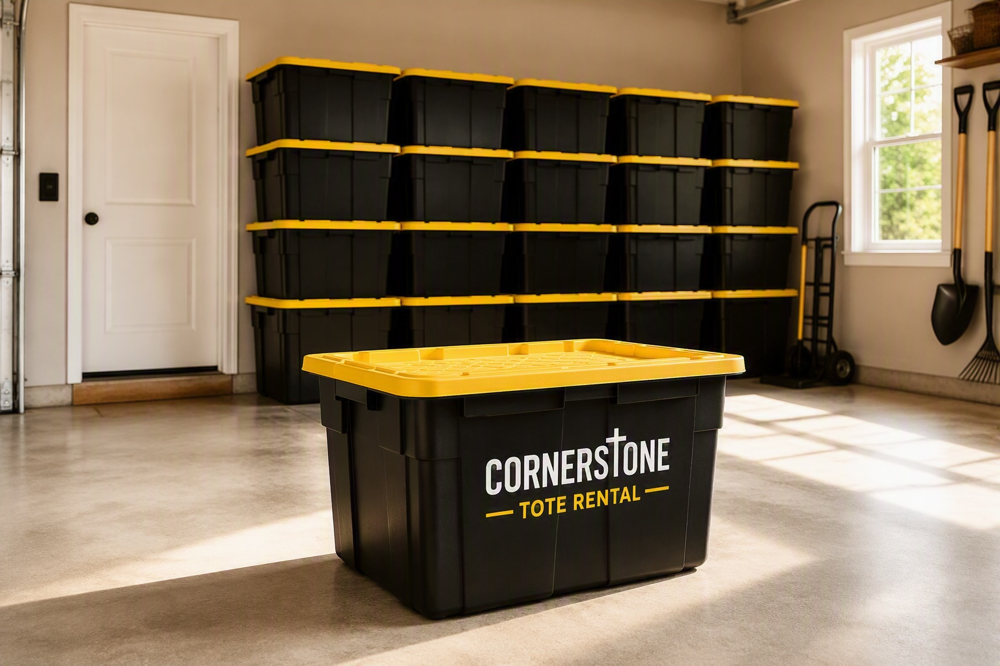

Serving WESTCHESTER COUNTY, NY
Reusable moving totes delivered to your door and picked up when you're finished. Serving Westchester County, NY.
Book NowDurable, reusable moving totes designed to make moving cleaner, faster, and more organized.

Moving made simple from delivery to pickup.
Clean, sanitized reusable totes are delivered directly to your home on your scheduled date.
No tape. No assembling boxes. Just pack your belongings and get ready for moving day.
Strong, stackable totes help keep your belongings organized and protected.
After your move, we return and collect the empty totes.
A cleaner, smarter, and more convenient way to move.
Skip the hassle of buying, assembling, and throwing away cardboard boxes.
Durable reusable totes designed to handle your household belongings.
We bring the totes to you and pick them up when your move is complete.
Every rental includes delivery, pickup, and clean reusable totes.
Studio / 1 Bedroom
20, 27 gallon heavy-duty totes
1 Tote dolly
14-day rental
Free delivery & pickup
Extensions available
2–3 Bedrooms
40, 27 gallon heavy-duty totes
2 Tote dollies
14-day rental
Free delivery & pickup
Extensions available
4+ Bedrooms
60, 27 gallon heavy-duty totes
2 Tote dollies
14-day rental
Free delivery & pickup
Extensions available
Cornerstone Tote Rental proudly serves Westchester County, NY. Our mission is to make moving easier by providing durable reusable totes delivered directly to you and picked up when your move is complete.
Ready to make your move easier?